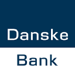

NOVO NORDISK A/S Aktie
NOVO NORDISK A/S ist ein börsennotiertes Unternehmen aus Dänemark. Die Aktie schloss am 24. November 2026 bei 36,83 € (Xetra). Die Dividendenrendite liegt bei 4,23 %, die Dividende je Aktie bei 11,6382 Dänische Kronen.
| Kennzahl | Wert |
|---|---|
| Kurs | 36,83 € Xetra, 24. November 2026 |
| Börsenwert | 163,8 Mrd. € |
| Dividendenrendite | 4,23 % |
| Dividende je Aktie | 11,6382 DKK Geschäftsjahr 2025 |
| Ausschüttungsquote (Gewinn) | 51 % |
| Dividendenwachstum 5 Jahre p. a. | 22,0 % |
| KGV | 12,0 |
| KBV | 6,3 |
| KUV | 4,0 |
| KCV | 10,3 |
| KFCF | 20,8 |
| EV/EBITDA | 9,3 |
| PEG | 0,58 |
| ROIC | 31,0 % |
| Operative Marge | 41,3 % |
| Zinsdeckung | 30,3 x |
| Nettoschulden zu EBITDA | 0,7 |
| Umsatzwachstum 5 Jahre p. a. | 19,5 % |
| Gewinnwachstum 5 Jahre p. a. | 19,4 % |
| Free-Cashflow-Rendite | 4,8 % |
| Nettomarge | 33,1 % |
| Eigenkapitalrendite | 52,8 % |
| Umsatz | 45,3 Mrd. USD in US-Dollar umgerechnet |
| Gewinn | 15,0 Mrd. USD in US-Dollar umgerechnet |
| Nettoschulden | 13,6 Mrd. USD |
Die Dividende ist mit 51 % des Gewinns gedeckt.
Finanzen im Überblick
Gewinnfluss: vom Umsatz zum Gewinn
Operativer Cashflow und Free Cashflow
Mittelverwendung: Investitionen, Dividende, Rückkäufe
Gewinn je Aktie (verwässert)
Margen: operativ und netto
Zinslast: Zinsaufwand
Zinsdeckung (operatives Ergebnis durch Zinsaufwand)
Eigenkapital, Liquidität und langfristige Schulden
Nur Testseite: NOVO NORDISK A/S im Aktien-Hub (DCF, Analysten, Live-Kurs)
Vergleich mit ähnlichen Aktien
Gegenübergestellt sind 5 Dividendenwerte aus der Gruppe „ähnlich große Dividendenwerte aus Dänemark“ mit ähnlichem Umsatz. Die Auswahl entsteht automatisch aus Sektor, Land und Größe.
| Aktie | Rendite | KGV | Quote |
|---|---|---|---|
| NOVO NORDISK A/S | 4,23 % | 12,0 | 51 % |
 Danske Bank | 6,23 % | 13,1 | 81 % |
| JYSKE BANK A/S | 2,20 % | 13,6 | 30 % |
| Tryg | 4,91 % | 19,0 | 93 % |
| 2,51 % | 15,7 | 40 % | |
| DSV | 0,51 % | 40,4 | 20 % |
Kennzahlen aller Firmen im Vergleich
Aktuelle Artikel
- Novo Nordisk hebt nach Q3-Gewinn von 31,7 Mrd. DKK Jahresprognose an
- Novo Nordisk meldet Zwischenstand beim Aktienrückkauf in Höhe von 11,6 Milliarden DKK
Häufige Fragen
Wie hoch ist die Dividendenrendite der NOVO NORDISK A/S-Aktie?
Die Dividendenrendite liegt bei 4,23 % (Kurs 36,83 € am 24. November 2026).
Wie hoch ist die Dividende je Aktie bei NOVO NORDISK A/S?
Zuletzt 11,6382 Dänische Kronen je Aktie (Geschäftsjahr 2025).
Welche WKN und ISIN hat NOVO NORDISK A/S?
ISIN DK0062498333. Börsenkürzel: NVO.
Hinweis: Diese Seite dient der allgemeinen Information und ist keine Anlageberatung. Zahlen aus Börsenkursen und Geschäftsberichten, ohne Gewähr.